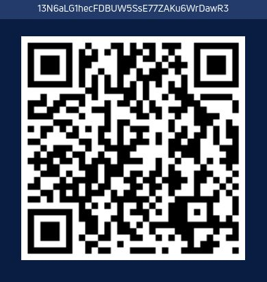

How to Help?
How can you make the world a better place? - Be kinder to animals! Don't leave your pets alone (especially in the car)! - If you see acts of animal abuse, call the police immediately! - Become a volunteer, or at least bring some food to the animal shelter in your city. - If you have free money (every сent is important), please help us feed homeless animals and create an animal shelter in Tashkent. Requisites: (Paypal is not supported in our country) BTC: 13N6aLG1hecFDBUW5SsE77ZAKu6WrDawR3 ; If you don't know how to use bitcoin, we are ready to accept help in any other way(WU, MoneyGram, etc.) -If you are a citizen of Uzbekistan, you can open the section "Charity" in any local banking mobile app, there you will find all our requisites and contacts.
BTC:
13N6aLG1hecFDBUW5SsE77ZAKu6WrDawR3
